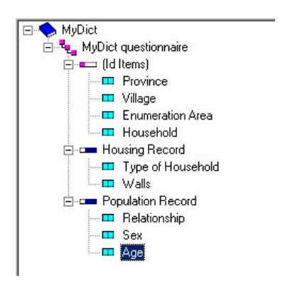

* =============================================================================
* Set paths
* =============================================================================
* !!! WARNING !!! Put your paths here before executing
local dir_in "C:/your/path"
local dir_out "`dir_in'"
* =============================================================================
* Data preparation
* =============================================================================
* -----------------------------------------------------------------------------
* Import the sample to be assigned
* -----------------------------------------------------------------------------
import delimited using "`dir_in'/example_sample.tsv", ///
varnames(1) /// treat first line as variable names
clear
* -----------------------------------------------------------------------------
* Transform columns into those expected by SuSo
* -----------------------------------------------------------------------------
* convert from numeric to string
rename province province_old
gen province =
gen days_preferred = .
replace province = 1 if province_old == "Bulawayo
replace province = 2 if province_old == "Harare
replace province = 3 if province_old == "Manicaland
replace province = 4 if province_old == "Mashonaland Central
replace province = 5 if province_old == "Mashonaland East
replace province = 6 if province_old == "Mashonaland West
replace province = 7 if province_old == "Masvingo
replace province = 8 if province_old == "Matabeleland North
replace province = 9 if province_old == "Matabeleland South
replace province = 10 if province_old == "Midlands
* rename variables to match expected nameCreating (simple) assignments
Roadmap
On paper
In Interviewer
In Designer
In Headquarters
In practice
On paper
Have
TODO: Cover page, without annotations
Have
TODO: Cover page with annotations to identify identifying variables
Need (for finding household)
TODO: Cover page with further annotations to identify ID vars needed for finding a household (potentially subset of all ID vars)
In Interviewer
List of cases
TODO: List of cases. Image showing list of cases in Create New tab
- Each case is a card
- Card contains case
- Details
- Interview
Details for each case
TODO: Video showing how details shown (hidden) when card tapped to expand (collapse) details.
- Tap card to view more details
- Tap
OPENto start interview
Details to identify a case
TODO: Show two processes for finding a case: - Manual tap to expand - Search, which demonstrably operates across tabs (with target case in Started) tab
- Spot based on visible info
- Search across all info
In Designer
In CSPro

- Provided by user (and/or lookup file)
- Must be unique when field concatenated
In Survey Solutions
SuSo creates IDs
- Unique
- -readable IDs
TODO: sketch table of with interview__id, interview__key, and some practical identifiers
User provides IDs
- Practical
- -readable
TODO: Show cover page in Designer.
In Headquarters
One-by-one
TODO: Short video showing the process of creating an assignment one-by-one. Could be same as in “whole game” slides. See intent here. Maybe edit down the content from server overview create assignments.mp4.
- Variables on the cover page
- User responsible
- Audio recording
Batch
TODO: Short video of process for creating and uploading assignments in bulk. See intent here.
- Variables on the cover page
_responsible_record_audio
In practice
Process
- Obtain the list of ID variables
- Create a tab-delimited assignment file
- Use an existing data set
- Keep the ID variables
- Create other columns, such as
_responsible_record_audio
Obtain the list of ID variables
TODO: video of steps outlined in right-hand column of this slide
- Click on
Survey Setup - Select
Questionnaires - Click on a questionnaire
- Select
Upload assignments - Click on
View list of preloaded values - Get tab-delimited template (optionally)
Create a tab-delimited assignment file
Compare inputs with desired outputs
Modify inputs
Export tab-delimited output
Compare inputs with desired outputs
TODO: image of comparison, potentially with annotations:
- SuSo variables on cover page with one opened to see type and codes
- SuSo template (i.e., tab-delimited file downloaded in earlier step)
- Raw (fake) data whose values are in a different format than desired by Survey Solutions (e.g., in raw data, categorical quesiton stored as string variable corresponding to value labels)
If with annotations, perhaps let the image occupy the full slide, rather than limited to the 70% on the left.
Designer
- Contains: all variables
Confirm
- Data type expected
- Values allowed
.tab template
- What: list of ID variables
Confirm:
- Variables expected
- Variable names
Raw data
- What: data values
- Confirm modifications needed
Modify inputs
Objectives 🎯
TODO: list requirements for raw -> assignment
For ZiHBS example:
- Load raw data
- Transform character provience to categorical
TODO: adapt code to example created for slides
Check matches SuSo
Objectives 🎯
- Check that required columns are present
- Confirm that columns contain right type of data
TODO: adapt to Capturing What Matters Example
* ==============================================================================
* Check matches SuSo
* ==============================================================================
* -----------------------------------------------------------------------------
* Confirm that data contain desired columns
* -----------------------------------------------------------------------------
#delim ;
local vars "
province
ea
hh_num
hh_head
";
#delim cr
foreach var of local vars {
confirm variable `var'
}
* -----------------------------------------------------------------------------
* Check that columns contain desired data format
* -----------------------------------------------------------------------------
* TODOExport tab-delimited output
Objectives 🎯
- Export to tab-delimited format
- Save where expected
* =============================================================================
* Export to a tab-delimited file
* =============================================================================
export delimited using
"`dir_out'/assignments_to_import.tab", /// where to write the file
delimiter(tab) /// tab-delimited format
nolabel /// how to handle labelled data: write numbers; not labels
replace